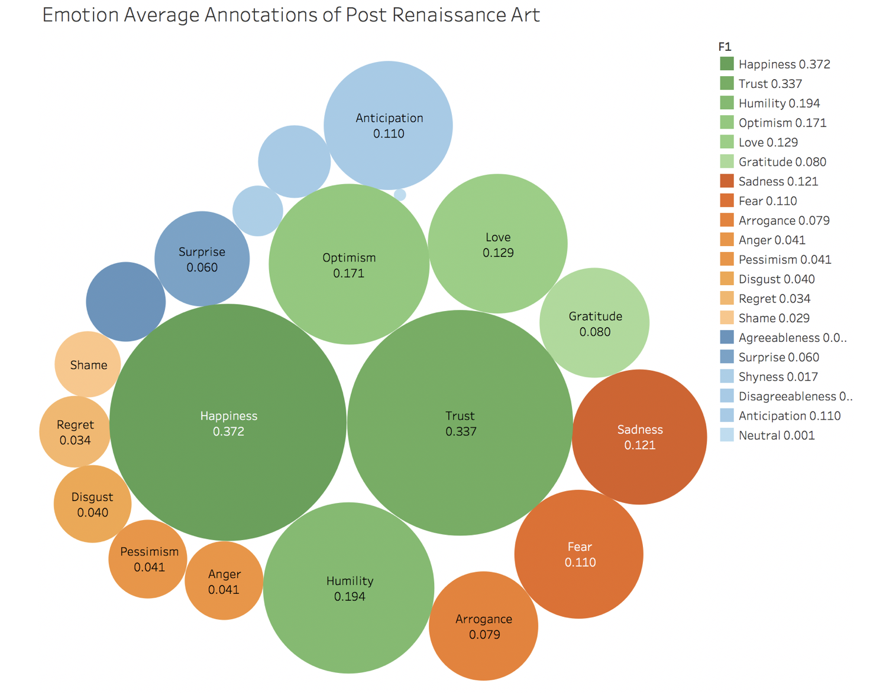
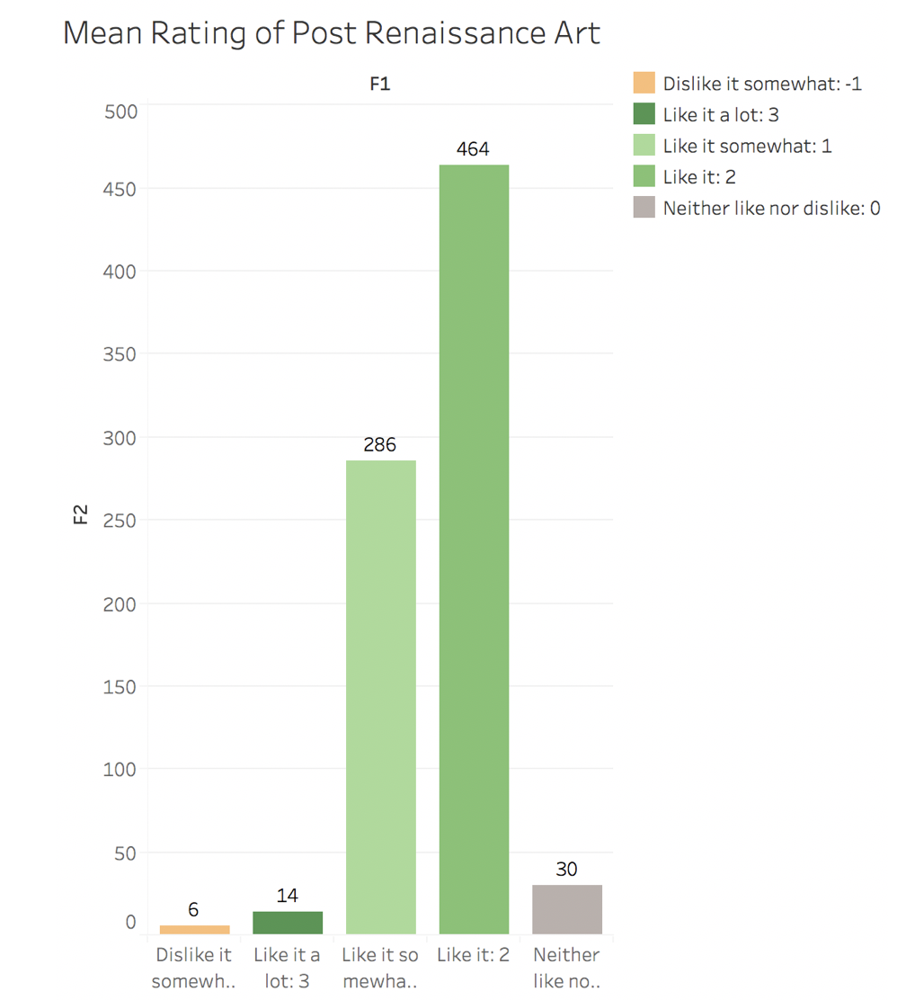

This bubble chart shows the emotion average annotation of Post Renaissance Art. The bubbles of green colors represent positive emotions; the bubbles of orange colors represent negative emotions; the bubbles of blue colors represent other emotions--mixed or neutral. The color inside each emotion type is from dark to light according to the average annotations.
From this bubble chart, we can see that the main type of emotions that annotators feel is the positive emotions. Happiness, Trust and humility has the average annotations of 0.372, 0.227 and 0.194, which is much higher than any other emotions.
This bar chart shows How did the annotators like the piece of Post Renaissance Art on average (-3 (strongly dislike) to 3 (strongly like)).
We use colors of green to represent ‘like’. We also use color of gray to represent ‘neither like nor dislike’ and the colors of oranges to represent ‘dislike’. The colors change from dark to light according to how much the annotators like the piece of art work.
From this visualization, it is clear that pieces of Post Renaissance are popular among the annotators. 464 annotators chose ‘like it’, which is more than the total amount of all the other choices. Besides, there are 286 annotators chose ‘like it somewhat’. So most annotators like the work of Post Renaissance Art.
